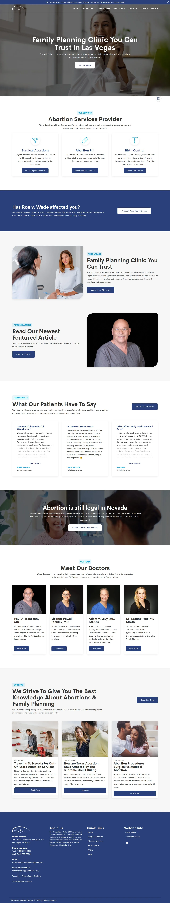

← All portfolio projects
SELECTED WORK · Healthcare
Birth Control Care Center.
A Las Vegas clinic website that brings practical family-planning information, treatment details and scheduling pathways into one place.
Explore this project01 / 07
EXPLORE THE WEBSITE
A closer look at the experience.
Use the browser below to scroll through the complete page designs, or switch between desktop, inner pages and mobile.
Birth Control Care Center / Project Preview
Scroll to explore

THE PROJECT
Designed around the journey.
The site introduces clinical services while giving visitors clear places to find answers and plan an appointment.
01
Service-focused navigation puts practical care details within reach.
02
Patient information and FAQs support visitors before contact.
03
Appointment guidance turns browsing into a clearer next step.